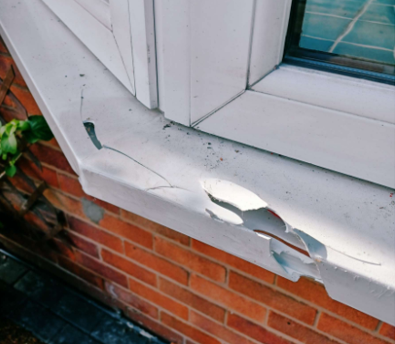
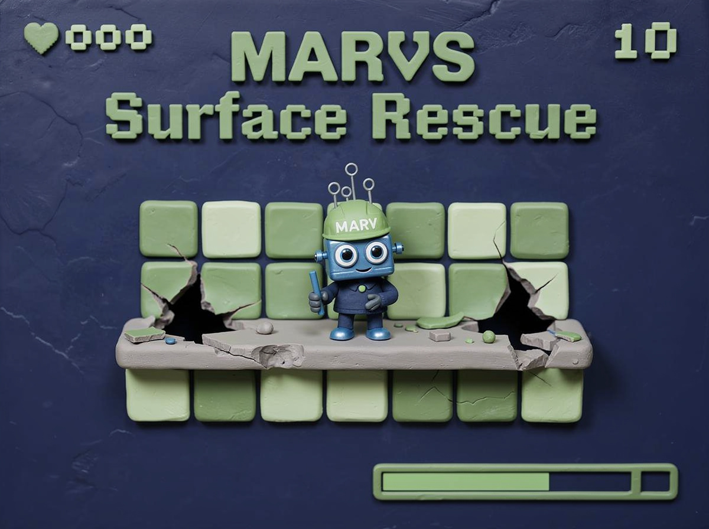
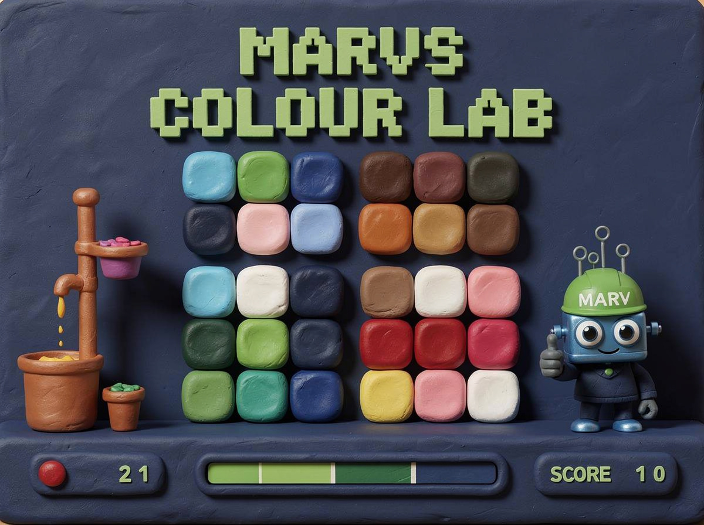

Whatever the surface - we have it covered.
Repair, renew, restore.
The results speak for themselves.


Before AfterTry it yourself.

Surface Rescue
You are a Magicman technician. Five damaged surfaces, a watching customer, and four stages of preparation on every job. Get it right and rescue the surface. Let the customer satisfaction drop to zero and the job is over.
Launch Surface Rescue
MARV's Colour Lab
Colour matching is one of the most skilled parts of any repair. Mix your paints, match the target patch, and see if you can hit the mark. Four difficulty levels - from trainee to master technician.
Launch Colour LabBoth challenges open in a new tab - your place here is saved.